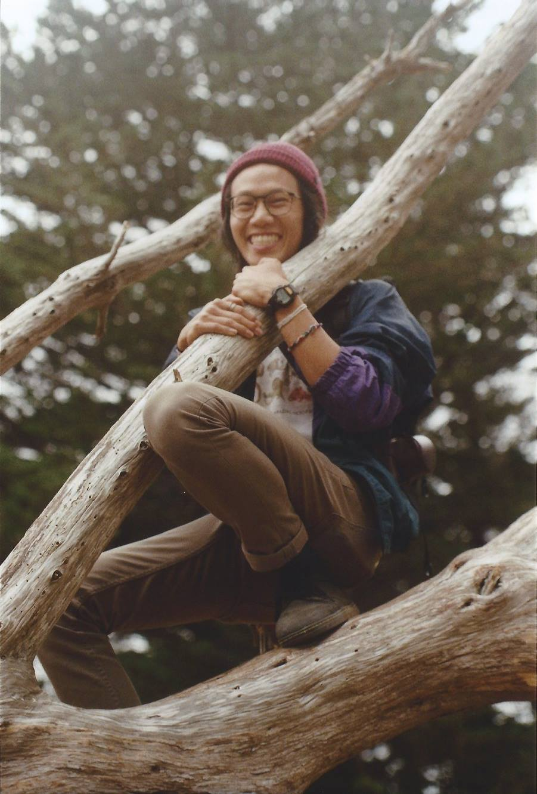

About Me

Hi there! My name is Andrew "Drewbie" and I'm a designer, hobby photographer, and outdoor enthusiast. I graduated from University of California, Berkeley in May 2017 with a B.A. in Cognitive Science. My other interests include sustainable living, cooperative movement, and social justice.